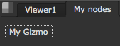

Customizing the UI¶
This chapter explains how to create your own hotkeys, menus, and menu items. This kind of code is typically placed in the menu.py file. Please refer to Installing Plug-ins for information on how to install custom files.
The menus currently available in NUKE are:
- Nuke - the application menu on top of the interface.
- Window - the Window menu found in all content menus.
- Nodes - the toolbar (and the right-click menu in the Node Graph).

- Properties - right-click menus of properties panels.
- Animation - the pop-up menu on the Animation button of all properties panels, and the right-click menu of the Curve Editor.
- Viewer - the right-click menu of the Viewer.
- Node Graph - the right-click menu of the Node Graph.
- Axis - the menus on all Axis_Knobs.
Creating a Custom Toolbar¶
To create a custom toolbar, use:
myToolbar = nuke.toolbar( 'My nodes' )
You can add custom items to the toolbar in the same way as to a menu (see below for details):
myToolbar.addCommand( 'My Gizmo', lambda: nuke.createNode('NoOp') )
If you don’t specify a toolbar menu for the item, the item is added as a button on the toolbar:
Otherwise, the item is added as a menu (like in the default toolbar):
myToolbar.addCommand( 'My Other Tools/tool A', lambda: nuke.createNode('NoOp') )
myToolbar.addCommand( 'My Other Tools/tool B', lambda: nuke.createNode('NoOp') )
To add an icon for the menu, create it explicitly before assigning menu items to it:
myMenu = myToolbar.addMenu( 'My Other Tools', icon='ohu_icon.png' )
myMenu.addCommand( 'tool A', lambda: nuke.createNode('NoOp') )
myMenu.addCommand( 'tool B', lambda: nuke.createNode('NoOp') )
Assigning a Hotkey¶
To assign a hotkey to an existing menu item, you effectively replace the whole menu item.
Let’s assign a hotkey to the Axis2 node. This node lives in the Nodes menu (that is, the toolbar), inside the 3D sub-menu. Its menu item is called Axis.
nuke.menu( 'Nodes' ).addCommand( '3D/Axis', lambda: nuke.createNode( 'Axis2' ), 'a')
Pressing a on the keyboard now creates an Axis node.
You can also use modifier keys when assigning a hotkey.
To use Ctrl (or cmd on Mac OS X) as the modifier, use:
- ctrl+ followed by the key, or
- ^ followed by the key.
For example:
nuke.menu( 'Nodes' ).addCommand( '3D/Axis', "nuke.createNode( 'Axis2' )", 'ctrl+a')
nuke.menu( 'Nodes' ).addCommand( '3D/Axis', "nuke.createNode( 'Axis2' )", '^a')
To use alt as the modifier, use:
- alt+ followed by the key, or
- # followed by the key.
For example:
nuke.menu( 'Nodes' ).addCommand( '3D/Axis', "nuke.createNode( 'Axis2' )", 'alt+a')
nuke.menu( 'Nodes' ).addCommand( '3D/Axis', "nuke.createNode( 'Axis2' )", '#a')
To use shift as the modifier, use:
- shift+ followed by the key, or
- + followed by the key.
For example:
nuke.menu( 'Nodes' ).addCommand( '3D/Axis', "nuke.createNode( 'Axis2' )", 'shift+a')
nuke.menu( 'Nodes' ).addCommand( '3D/Axis', "nuke.createNode( 'Axis2' )", '+a')
Defining Knob Defaults¶
To change the default values for knobs, use nuke.knobDefault():
nuke.knobDefault( 'Blur.size', '77' )
The above line sets the size control of any subsequently created Blur nodes to 77 by default.
When skipping the node class, the new default value is applied to all controls of the given name:
nuke.knobDefault( 'channels', 'rgba' )
The above sets all channels controls to rgba on node creation.